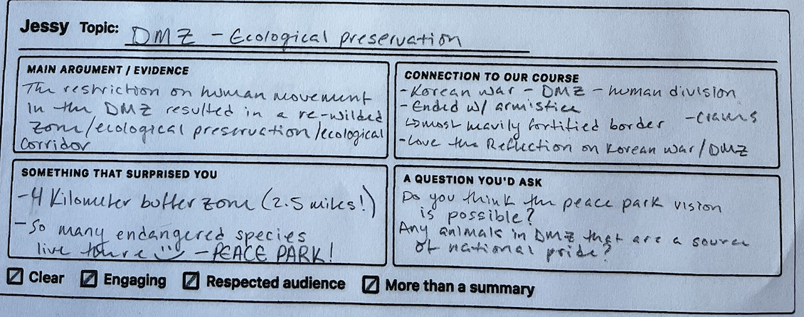
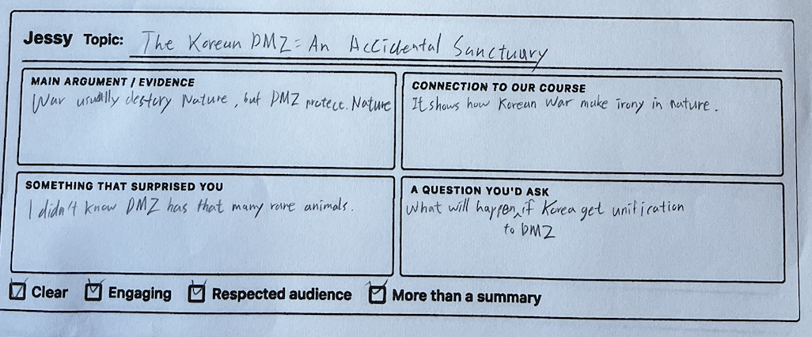
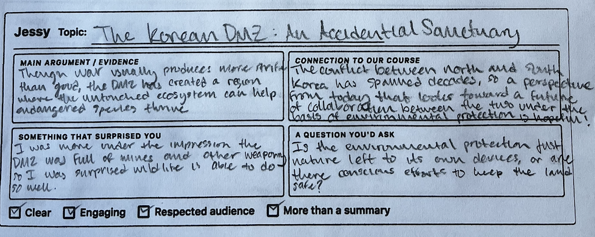
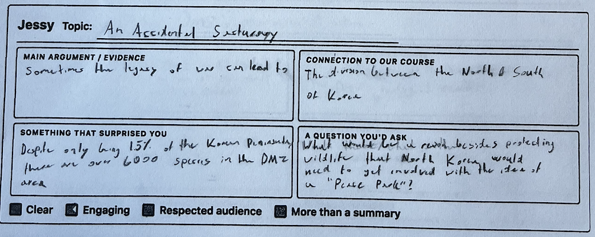
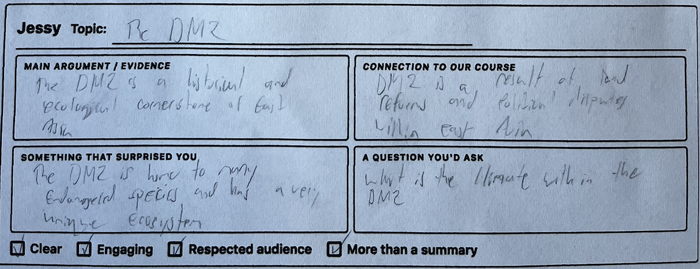
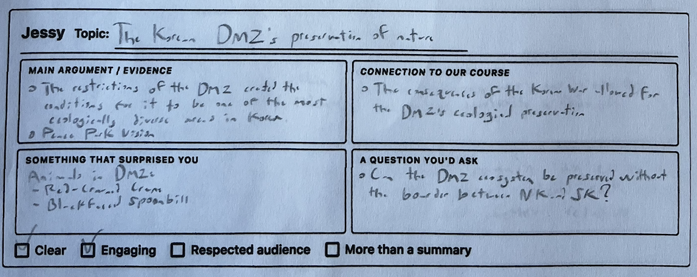
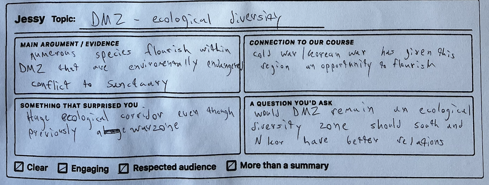

What your classmates wrote about your presentation
EAST 213 / Friday, March 13, 2026







Synthesis
Your presentation generated the strongest surprise responses of the day. Every single peer expressed genuine astonishment at the DMZ's biodiversity. Specific details that landed: the 4km buffer zone (2.5 miles), over 6,000 species in just 1.5% of the Korean Peninsula, the Red-crowned Crane and Black-faced Spoonbill, and the warzone-to-sanctuary transformation. One peer noted they "was more under the impression the DMZ was full of mines and other weapons." The most telling signal: five out of seven peers independently asked the same question: what happens to this ecosystem if reunification occurs? That means you successfully set up the central tension between political resolution and ecological preservation. Two especially sharp questions stood out: "Is the environmental protection just nature left to its own devices, or are there conscious efforts to keep the land safe?" and "What would be needed besides protecting wildlife that North Korea would need to get involved with the idea of a Peace Park?" Both push beyond the ecological framing into the political and practical dimensions that would strengthen the argument.